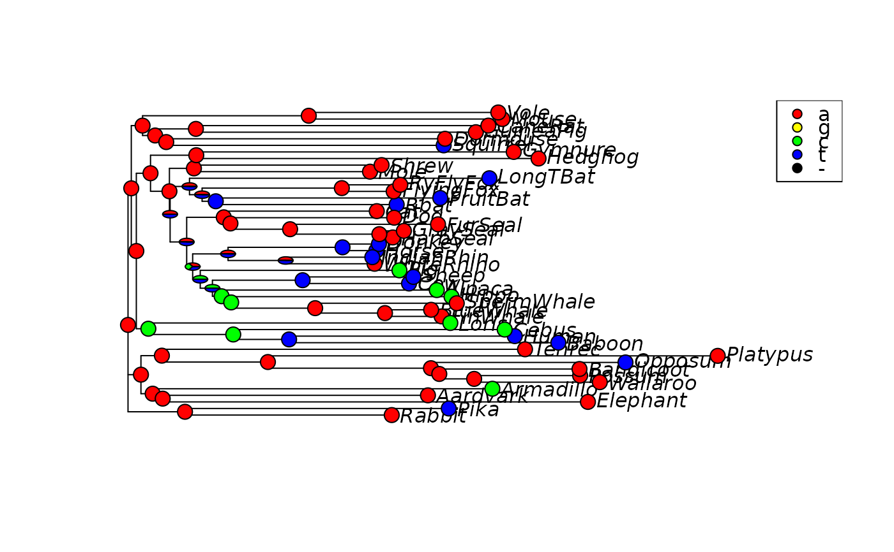
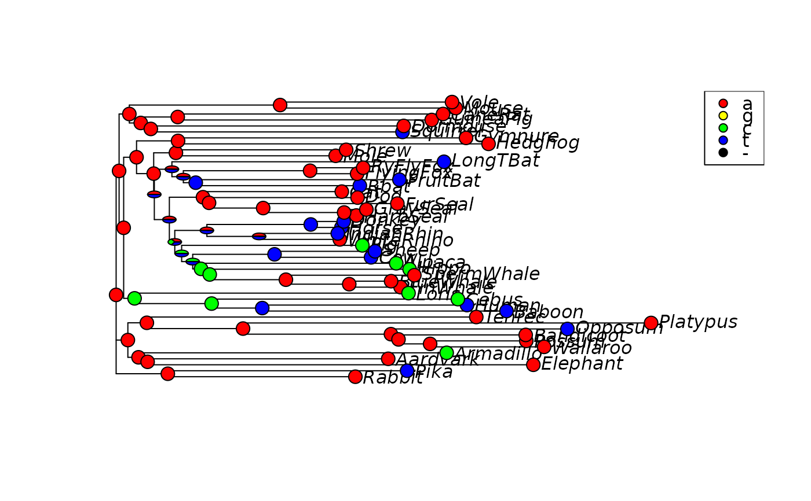
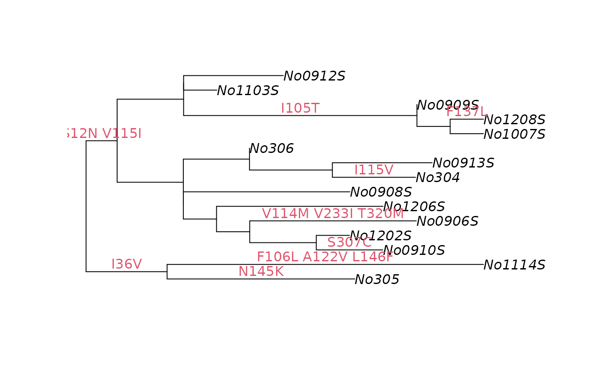
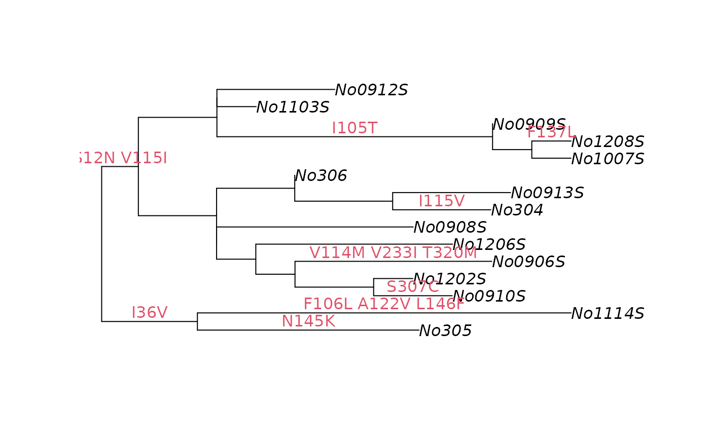

plotAnc plots a phylogeny and adds character to the nodes. Either
takes output from ancestral.pars or ancestral.pml or from an
alignment where there are node labels in the tree match the constructed
sequences in the alignment.
Usage
plotAnc(x, i = 1, type = "phylogram", ..., col = NULL, cex.pie = 0.5,
pos = "bottomright", scheme = NULL)
plotSeqLogo(x, node = getRoot(x$tree), start = 1, end = 10,
scheme = "Ape_NT", ...)
add_mutations(x, pos = NULL, frame = "none", ...)Arguments
- x
an object of class
ancestral.- i
plots the i-th site.
- type
a character string specifying the type of phylogeny to be drawn; it must be one of "phylogram" (the default), "cladogram", "fan", "unrooted", "radial", "tidy", or any unambiguous abbreviation of these.
- ...
Further arguments passed to or from other methods.
- col
a vector containing the colors for all possible states.
- cex.pie
a numeric defining the size of the pie graphs.
- pos
position or range in the alignment to add mutations. If NULL all mutations are written out.
- scheme
a predefined color scheme. For amino acid options are "Ape_AA", "Zappo_AA", "Clustal", "Polarity" and "Transmembrane_tendency", for nucleotides "Ape_NT" and"RY_NT". Names can be abbreviated.
- node
to plot for which the probabilities should be plotted.
- start
start position to plot.
- end
end position to plot.
- frame
a character string specifying the kind of frame to be printed around the text. See
edgelabels.
Value
plotAnc returns silently x.
plotSeqLogo returns a ggplot object.
add_mutations adds the position and changes of possible
mutations to a phylogeny.
Author
Klaus Schliep klaus.schliep@gmail.com
Examples
example(NJ)
#>
#> NJ> data(Laurasiatherian)
#>
#> NJ> dm <- dist.ml(Laurasiatherian)
#>
#> NJ> tree <- NJ(dm)
#>
#> NJ> plot(tree)
 # generate node labels to ensure plotting will work
tree <- makeNodeLabel(tree)
anc.p <- anc_pars(tree, Laurasiatherian)
# plot the third character
plotAnc(anc.p, 3, pos="topright")

plotSeqLogo(anc.p, node="Node10", 1, 25)
# generate node labels to ensure plotting will work
tree <- makeNodeLabel(tree)
anc.p <- anc_pars(tree, Laurasiatherian)
# plot the third character
plotAnc(anc.p, 3, pos="topright")

plotSeqLogo(anc.p, node="Node10", 1, 25)
 data(chloroplast)
tree <- pratchet(chloroplast, maxit=10, trace=0)
tree <- makeNodeLabel(tree)
anc.ch <- anc_pars(tree, chloroplast)
image(as.phyDat(anc.ch)[, 1:25])
data(chloroplast)
tree <- pratchet(chloroplast, maxit=10, trace=0)
tree <- makeNodeLabel(tree)
anc.ch <- anc_pars(tree, chloroplast)
image(as.phyDat(anc.ch)[, 1:25])
 plotAnc(anc.ch, 21, scheme="Ape_AA", pos="topleft")
plotAnc(anc.ch, 21, scheme="Ape_AA", pos="topleft")
 plotAnc(anc.ch, 21, scheme="Clustal", pos="topleft")
plotAnc(anc.ch, 21, scheme="Clustal", pos="topleft")
 plotSeqLogo(anc.ch, node="Node1", 1, 25, scheme="Clustal")
plotSeqLogo(anc.ch, node="Node1", 1, 25, scheme="Clustal")
 data(woodmouse)
tree <- pml_bb(woodmouse, "JC", rearrangement="NNI")$tree |> midpoint()
#> optimize edge weights: -1861.356 --> -1857.165
#> optimize edge weights: -1857.165 --> -1857.165
#> candidates: 6 swap: 1
#> candidates: 4 swap: 1
#> candidates: 0 swap: 0
#> optimize topology: -1857.165 --> -1856.056 NNI moves: 2
#> candidates: 0 swap: 0
#> optimize topology: -1856.056 --> -1856.056 NNI moves: 0
woodmouse_aa <- trans(woodmouse, 2) |> as.phyDat()
#> Warning: sequence length not a multiple of 3: 2 nucleotides dropped
anc_aa <- anc_pars(tree, woodmouse_aa)
plot(tree)
add_mutations(anc_aa, adj = c(.5, -0.3), col=2)

data(woodmouse)
tree <- pml_bb(woodmouse, "JC", rearrangement="NNI")$tree |> midpoint()
#> optimize edge weights: -1861.356 --> -1857.165
#> optimize edge weights: -1857.165 --> -1857.165
#> candidates: 6 swap: 1
#> candidates: 4 swap: 1
#> candidates: 0 swap: 0
#> optimize topology: -1857.165 --> -1856.056 NNI moves: 2
#> candidates: 0 swap: 0
#> optimize topology: -1856.056 --> -1856.056 NNI moves: 0
woodmouse_aa <- trans(woodmouse, 2) |> as.phyDat()
#> Warning: sequence length not a multiple of 3: 2 nucleotides dropped
anc_aa <- anc_pars(tree, woodmouse_aa)
plot(tree)
add_mutations(anc_aa, adj = c(.5, -0.3), col=2)
